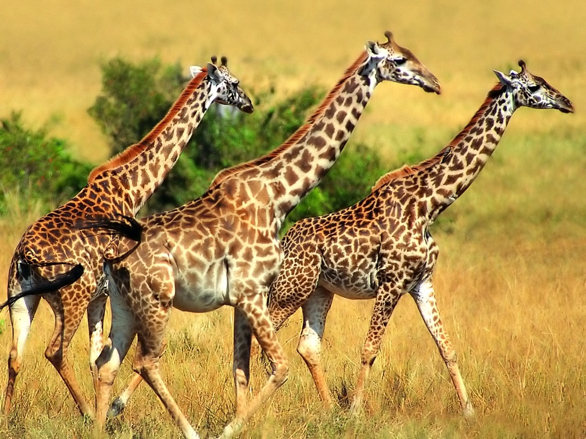

JAVASCRIPT

Javascript é uma linguagem de script para construção de páginas da Web utilizando recursos dinâmicos. Podemos criar efeitos especiais, controlar os dados digitados em um formulário e criar algumas animações. Clique na imagem para conhecer mais sobre!
RESGATE DA FAUNA SILVESTRE
Fauna silvestre é o conjunto de animais que vivem livres em seu ambiente natural, não são domesticaveis e geralmente atacam outros seres que se aproximam como forma de defesa. Clique na imagem acima para conhecer mais sobre!